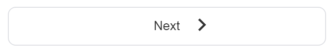

How to play Google Search Webspace
1. Type the text you want to search in the query textfield and press enter (or click the "search" button).
2. When results arrive, under the search textfield you will see a numbered bar from 1 to 10 (if you use desktop device) or a pager with a next arrow button  (if you use mobile device).
Mobile result pager:
Desktop result pager: 
Google Custom Search delivers 10 result pages with 10 results per page. As the first result page arrives, Google Search Webspace creates one pegman for each result. If you want to add more result pages (and more pegmen in your screen) just click on pager buttons (or on pages numbers) in result pager bar. Each time a result page added more pegmen created.
When you have add as many result pages you wish, you can close the pager bar to make more room in your screen. Pegmen are available until the next time you will use the search textfield. Just click the (x) button at the of the search textfield. This will clear the search box and remove the pager result bar. No more added pegmen.
Each pegman carry a search result. When a pegman is focused its result is displayed in the left bottom corner result box. Focused pegman may be changed when pegmen cross each other. When focused pegman changes the result box content updates. You can click on a pegman and jump to its result. What's the caught? Pegmen never stop running and cross each other. So you must be fast. Actually you are hunting results.
Result box is located in the left bottom corner (or side) of your application. It appears the result that current focused pegman carry. Clicking a link in the result box opens a new window and loads the linked page to find out what are you looking for. If not, you can come back to the application and try with an other pegman. Pegmens are still there running up and down dizzying you until the next search where a new pegmen generation will take over.
Enjoy!